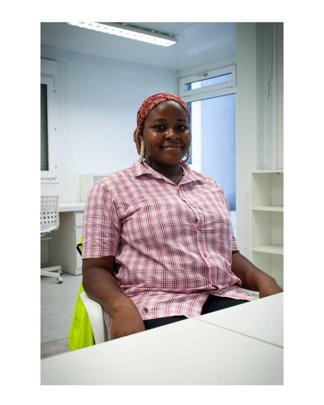

Uduakobong Lawrence Okonah | WDD 130
Memory updated Hello, my name is Uduakobong Lawrence Okonah, and I am from Akwa Ibom State, Nigeria. I am a final year student at the University of Cross River State (UNICROSS), studying Electrical Electronics Engineering. My long-term goal is to become a Telecommunication Software Engineer. Currently, I am pursuing a degree in Software Development, a field that excites me and presents numerous opportunities for growth and innovation. In my free time, I enjoy reading novels, listening to music, and cooking delicious meals. Thank you for visiting my web page!